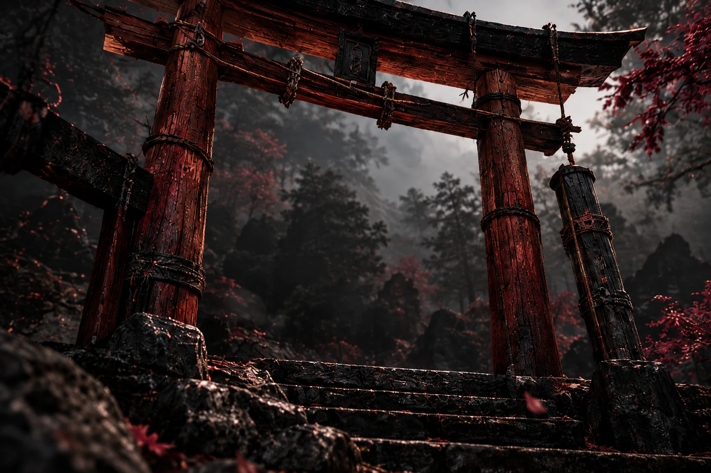
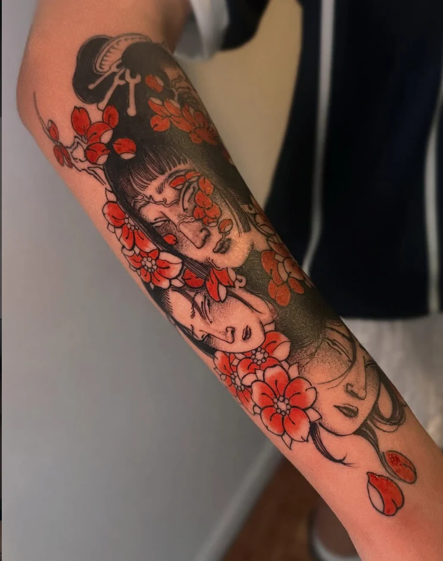
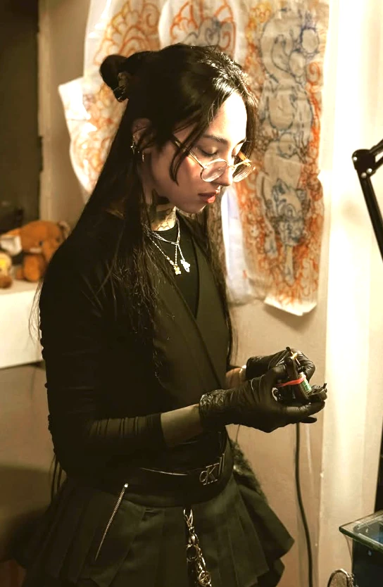
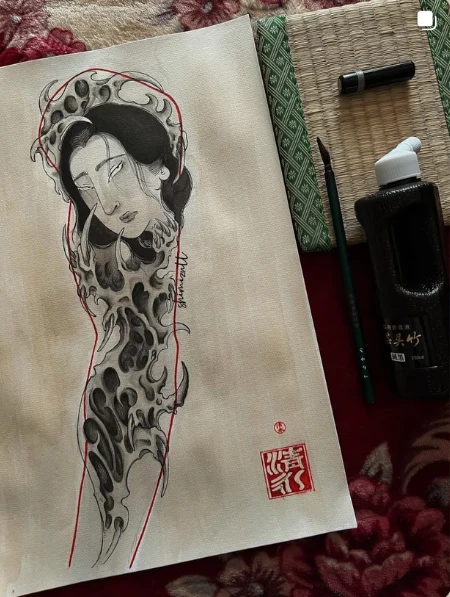
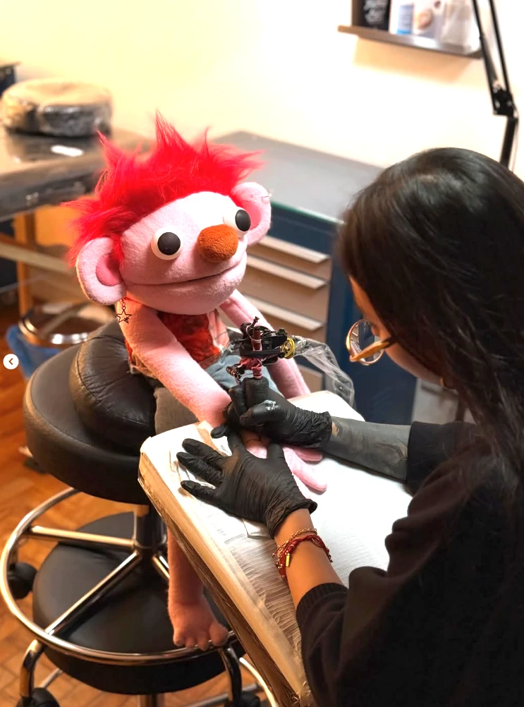
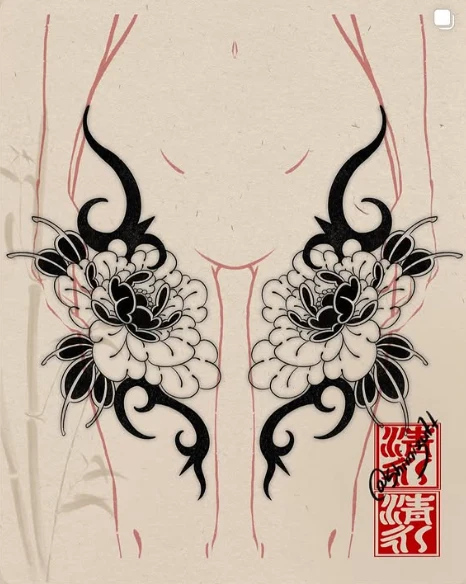
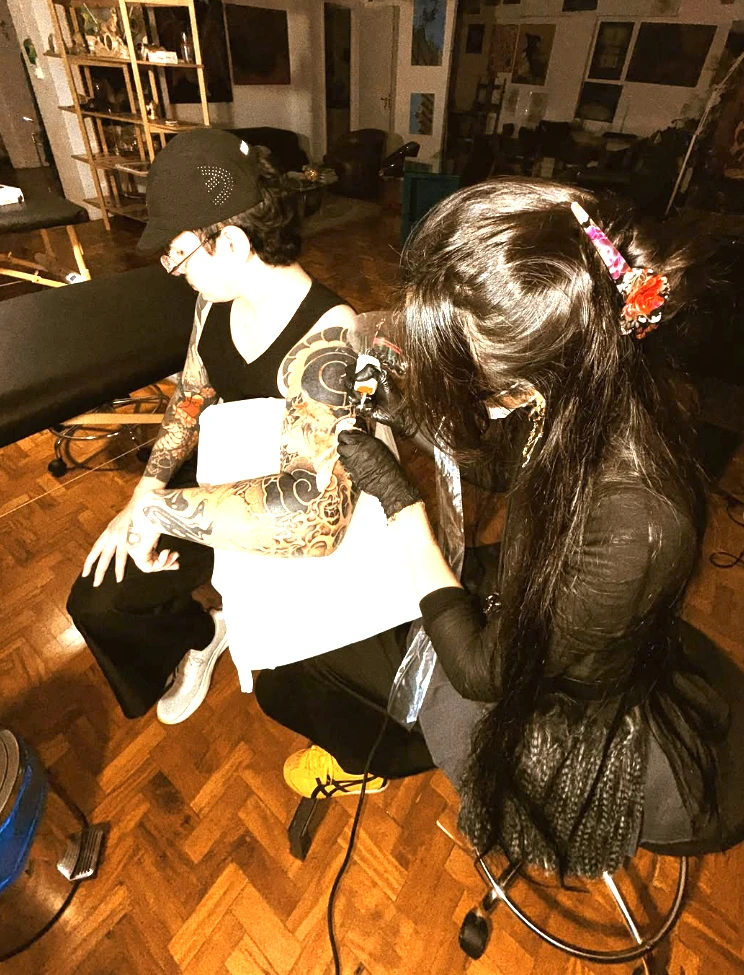

Shimizu. Arte, corpo e existência.

Às vezes
viver
dói bonito.
ARTE
CORPO
PROCESSO
EXISTÊNCIA

TRABALHOS
TATUAGENS COMO
EXTENSÃO DA EXISTÊNCIA.
O traço encontra a pele.
Figuras, flores e criaturas se aproximam em composições de preto, respiro e cor. Cada imagem revela um encontro entre desenho e corpo, entre o que aparece e o que permanece.

A ARTISTA
Às vezes
viver dói bonito.
Arte, corpo e existência
em constante diálogo.
Antes da pele, existe o olhar. O desenho nasce entre referências, pequenos gestos e escolhas que dão peso ao traço. No papel e no corpo, a imagem encontra novas maneiras de existir.
Entre a concentração e o cotidiano, também há espaço para experimentar, brincar e voltar a desenhar.



PROCESSO
DA IDEIA
AO CORPO.
- 01PESQUISA
Referências, formas e imagens que provocam o primeiro gesto.
- 02DESENHO
O papel recebe as primeiras linhas, massas e possibilidades.
- 03COMPOSIÇÃO
Figura, fundo e espaço se encontram no mesmo ritmo.
- 04ADAPTAÇÃO
O desenho conversa com os volumes e o movimento do corpo.
- 05EXECUÇÃO
Da linha à sombra, a imagem ganha presença na pele.
ESTUDOS ORIGINAIS DE SHIMIZU

Um gesto de cada vez.
DISPONÍVEIS
DESENHOS AUTORAIS
DO PAPEL PARA A PELE.
Uma ideia à espera de pele.
Explore os desenhos e encontre uma composição que converse com você. Pelo Instagram, consulte a disponibilidade, o tamanho e as possibilidades para a região do corpo que você imagina.
CONTATO
ORÇAMENTOS E DÚVIDAS
PELO LINK ABAIXO.
O próximo desenho começa
com uma conversa.
Conte um pouco da sua ideia, da região do corpo e das referências que te acompanham. O Instagram é o ponto de encontro para começar.